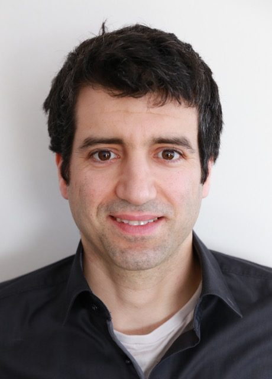
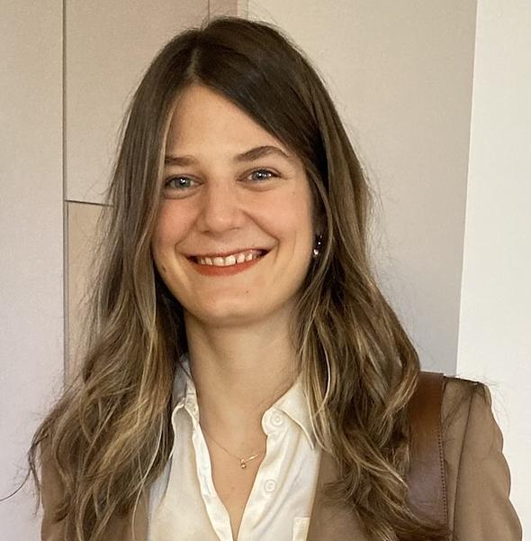
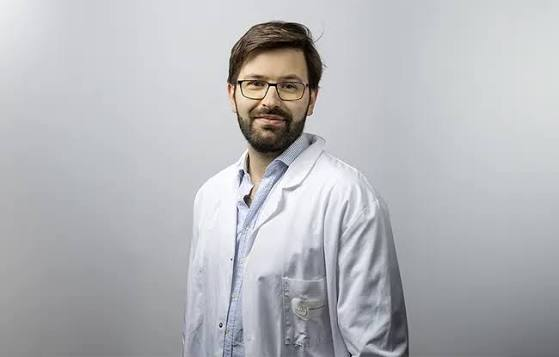
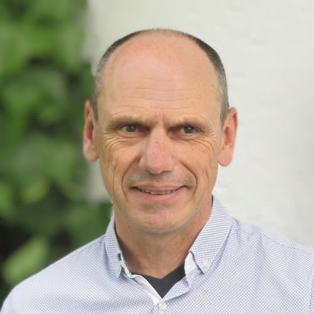
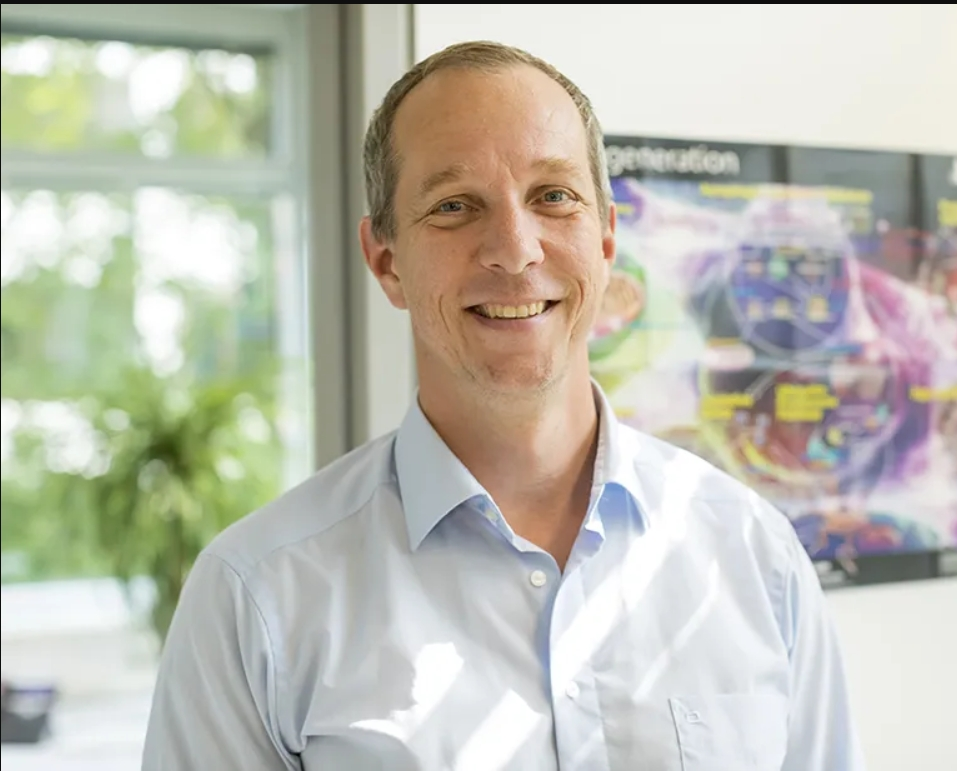
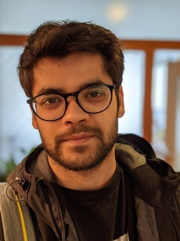
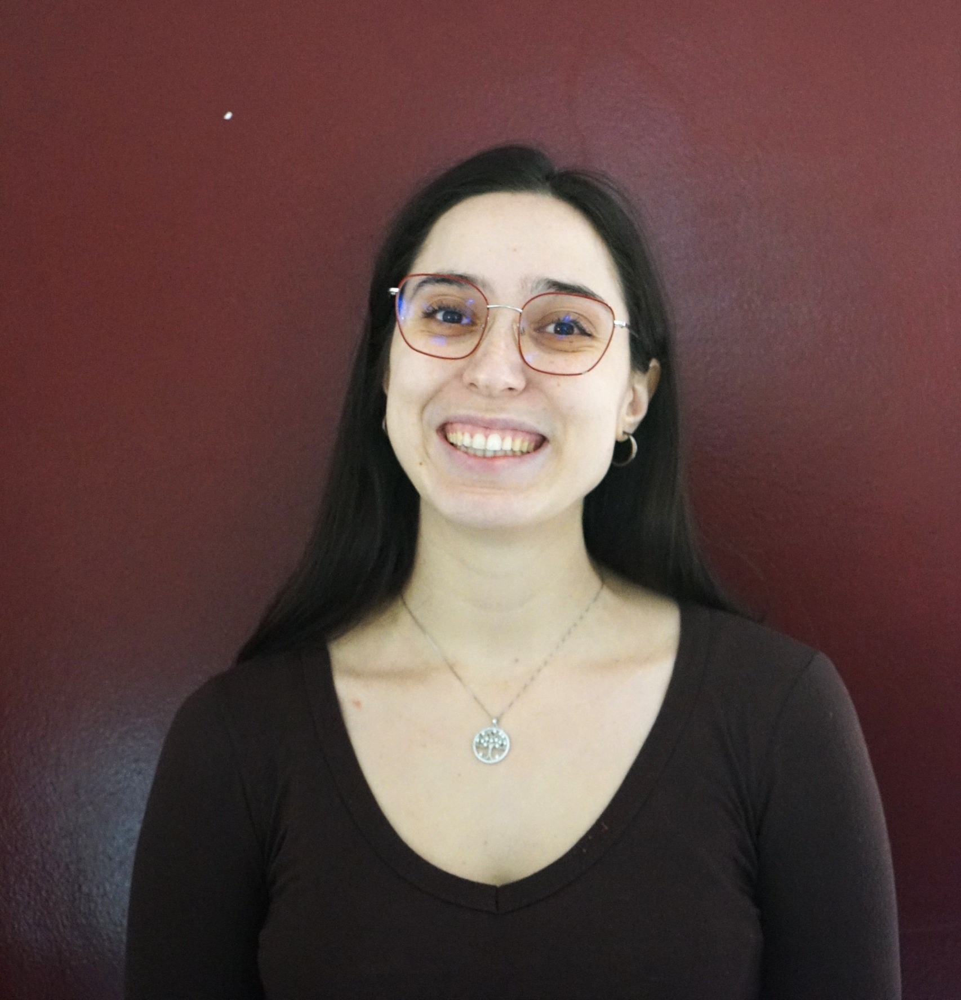
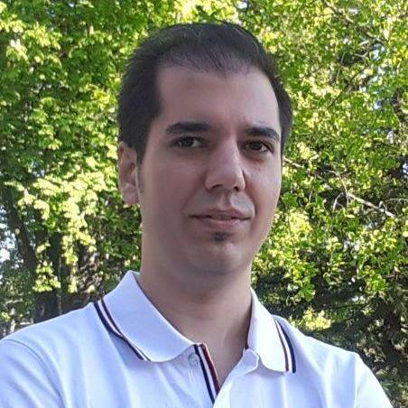

Overview
Spatially resolved biology has become one of the most active frontiers in life sciences. Technologies for spatial transcriptomics, spatial proteomics, and multiplex imaging now measure molecular activity while preserving the position of cells inside intact tissue — enabling the study of how cells communicate, organize, and change within their native microenvironment, with direct consequences for cancer research, immunology, neuroscience, developmental biology, and precision medicine.
These measurements raise machine learning problems that do not fit cleanly into single-cell or imaging pipelines. Tissue is a geometric object: cells sit in irregular spatial graphs, signals vary smoothly across space, and biological meaning depends on context at several scales at once — from subcellular structure to multicellular niche to whole organs. Spatial assays are also inherently multimodal, pairing molecular readouts with histology images, and are growing toward atlas-scale and whole-slide resolution.
This workshop establishes a dedicated venue at NeurIPS for the intersection of ML and spatially resolved high-dimensional biology — bringing together ML researchers and experimental biologists around a shared set of methodological problems, surfacing open challenges, and beginning to build common benchmarks and evaluation standards for the field.
Important Dates
| Milestone | Date |
|---|---|
| Submission portal opens | August 2026 |
| Submission deadline | September 5, 2026 |
| Reviews returned to authors | September 22, 2026 |
| Acceptance notifications | September 29, 2026 |
| Workshop day | December 2026, Paris TBD |
All times will be announced in the workshop's local timezone once confirmed by NeurIPS. Submissions are managed via OpenReview — see the Call for Papers for details.
Topics of Interest
We welcome contributions addressing open problems that call for novel ML methods rather than incremental applications, including:
- Learning biologically meaningful spatial representations that hold across scales — from molecules to niches to organs
- Integrating transcriptomic, proteomic, imaging, and clinical modalities into a single coherent model
- Modeling cell-cell communication and tissue dynamics over time
- Interpretable and uncertainty-aware spatial models that biologists can trust
- Benchmarks, datasets, and evaluation standards specific to spatial tasks
- Foundation models for spatial biology that integrate biological priors and inductive biases for interpretability and cross-platform / cross-species generalization
- Handling data sparsity, noise, batch effects, and limited annotations
- Scaling learning to atlas-scale and whole-slide datasets
Invited Speakers

Julio Saez-Rodriguez
EMBL-EBI, Heidelberg
View bio →

Maria Brbić
EPFL, Zurich
View bio →

Pierre Bost
Institut Curie, Paris
View bio →

Martin Seifert
10x Genomics
View bio →
Indicative Schedule
Morning
- Opening remarks
- Invited talks (part 1)
- Contributed spotlights
- Poster session
Afternoon
- Invited talks (part 2)
- Contributed talks
- Panel discussion: open problems & benchmarking
- Closing remarks
Exact timing will be published once the room and slot are confirmed by NeurIPS.
Organizers

Stefan Bonn
Professor & PI, University Medical Center Hamburg-Eppendorf (UKE), Germany
View bio →



General inquiries: ml4spatialbio.workshop@gmail.com
Program Committee
To be announced. The program committee will be finalized and, if necessary, expanded based on the number of submissions received.
Venue
NeurIPS 2026, Paris, France. Room and building details will be announced by the conference organizers closer to the event.